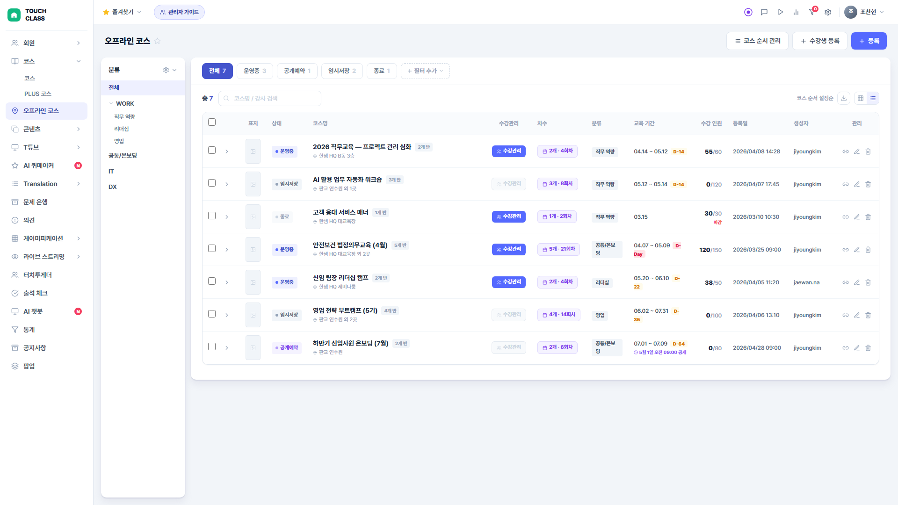
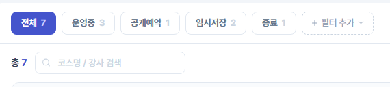
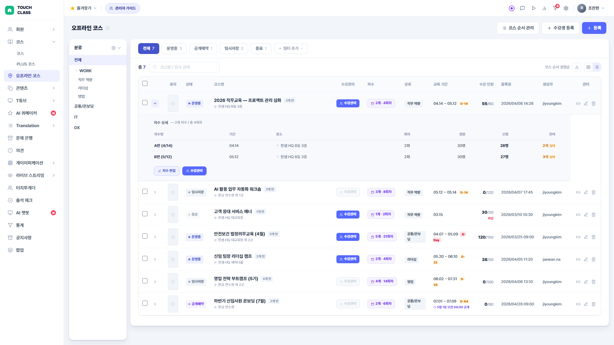
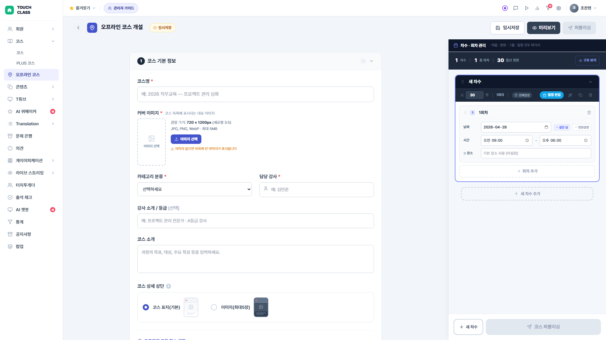
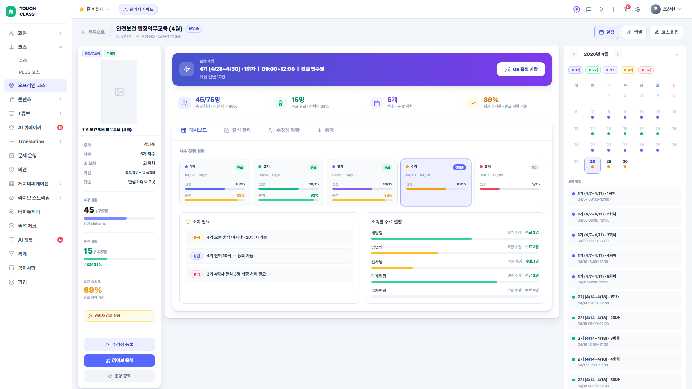
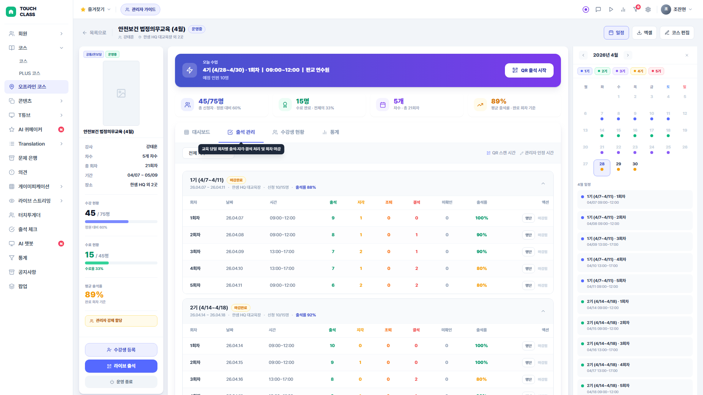
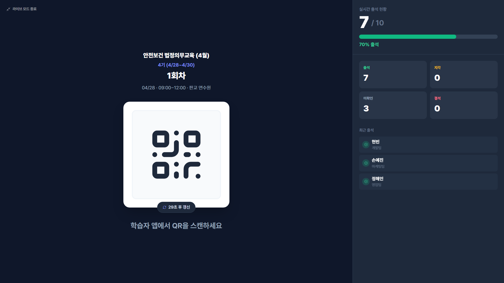

관리자 화면 개요
오프라인 LMS 관리자 화면은 코스 개설부터 수강생 관리, 출석·수료 처리까지 전 과정을 운영하는 시스템입니다. 5개 주요 화면으로 구성됩니다.
| 상태 | 배지 | 의미 | 수강관리 |
|---|---|---|---|
| 운영중 | ● 운영중 | 퍼블리싱 완료, 운영 중 | ✅ 활성 |
| 공개예약 | ● 공개예약 | 예약된 일시에 자동 공개 | ❌ 비활성 |
| 임시저장 | ● 임시저장 | 저장됐지만 미공개 | ❌ 비활성 |
| 종료 | ● 종료 | 운영 종료된 코스 | ✅ 활성 (조회 전용) |
목록 화면
오프라인 코스 전체 목록을 관리하는 메인 화면입니다. 좌측 분류 사이드바, 상단 상태 탭, 테이블로 구성됩니다.

course-learners.html로 이동. 코스 지정 없이 수강생을 먼저 등록.offline-builder.html로 이동. 새 오프라인 코스 개설.| 컬럼 | 설명 |
|---|---|
| ☑ 체크박스 | 다중 선택 후 일괄 삭제 가능 |
| ▶ 확장 | 클릭 시 차수 상세 행이 인라인 펼쳐짐 |
| 표지 | 코스 커버 이미지 썸네일 (8×53px) |
| 상태 | 운영중 / 공개예약 / 임시저장 / 종료 배지 |
| 코스명 | 코스 제목 + "N개 반" 배지 + 대표 장소. 클릭 시 빌더로 이동 |
| 수강관리 | 운영중·종료 코스만 활성. offline-course-view.html로 이동 |
| 차수 | N개 차수 · 총 N회차 버튼. 클릭 시 차수 행 펼치기/접기 |
| 분류 | 카테고리 배지 |
| 교육 기간 | 차수 전체 기간 범위. D-day 뱃지(D-Day·D-N) 표시. 공개예약 시 예약 일시 표시 |
| 수강 인원 | 신청/정원. 마감 시 빨간 "마감" 표시 |
| 등록일 | 코스가 등록된 일시 |
| 생성자 | 코스를 만든 계정 ID |
| 관리 | 링크 복사 · 편집(빌더) · 삭제 아이콘 |
상태별 필터
상단 탭을 클릭하면 코스를 상태별로 필터링할 수 있습니다. 각 탭에 해당 상태의 코스 수가 표시됩니다.

차수 확장 보기
코스 행의 ▶ 버튼 또는 차수 버튼을 클릭하면 해당 코스의 차수 상세 정보가 인라인으로 펼쳐집니다.

| 컬럼 | 설명 |
|---|---|
| 차수명 | 예) "1기 (4/7~4/11)" |
| 기간 | 시작일 ~ 종료일 (같은 날이면 단일 날짜) |
| 장소 | 📍 아이콘 + 장소명 |
| 회차 | 차수 내 총 회차 수 |
| 정원 | 차수 최대 수강 인원 |
| 신청 | 현재 신청 완료 인원 (굵게 표시) |
| 잔여 | 정원 - 신청. 마감이면 빨간 "마감", 80% 이상이면 주황 "임박" |
① 기본 정보
코스의 기본 정보를 입력하는 첫 번째 섹션입니다. 커버 이미지, 카테고리, 강사, 코스 소개 등을 설정합니다.

| 항목 | 설명 |
|---|---|
| 커버 이미지 | 720×1200px 권장. 클릭하여 업로드. 로컬 파일 저장 (localStorage) |
| 코스명 * | 필수 입력. 빈칸이면 퍼블리싱 체크리스트 미통과 |
| 카테고리 | 직무역량 / 리더십 / 영업 / 공통온보딩 / IT / DX |
| 담당 강사 | 강사명 직접 입력 또는 "강사 없음" 체크박스 |
| 강사 소개 | 강사 약력 또는 소개 텍스트 |
| 코스 소개 | textarea. 학습자 앱 코스 상세 화면에 표시 |
| 코스 상세 상단 | 표지(기본) vs 이미지 갤러리(최대 5장) 라디오 선택 |
| 교육 장소 | 장소명 + 상세 주소 + 지도 보기 + 교통·주차 안내 textarea |

② 수강 신청 설정
수강 신청 기간, 등록 방식(자율/강제), 취소·변경 정책, 학습자 차수 선택 규칙을 설정합니다.
| 항목 | 설명 |
|---|---|
| 수강 신청 기간 | 오픈 일시(datetime) + 마감 일시(datetime). 기간 외엔 학습자 신청 불가 |
| 취소 정책 | 자율 수강 시만 표시. 기한부(N일 전까지 취소 가능) / 불가(취소 불가) |
| 변경 제한 | 일정 변경 가능 여부 및 기한 설정 |
| 수강 신청 권한 | 특정 그룹만 신청 가능하도록 그룹 지정 (드롭다운) |
| 차수 선택 규칙 | 단일 선택 vs 다중 선택(N개). 다중 시 최대 선택 개수 입력 필드 활성 |


차수별 그룹 배정 UI로 전환
③ 수료 조건
수료 처리를 위한 출석 조건을 설정합니다. 전체 회차 출석 또는 최소 N회 출석 중 선택합니다.

차수 관리 (우측 사이드바)
빌더 우측 사이드바에서 차수(반)를 추가하고 관리합니다. 각 차수에는 정원, 강사, 장소, 회차가 포함됩니다.


회차 설정
차수 카드를 펼치면 회차(개별 수업일) 목록이 나타납니다. 날짜, 시간, 장소, 강사를 회차별로 설정합니다.
| 항목 | 설명 |
|---|---|
| 회차 일자 | 날짜 피커 (date input) |
| 시작 시간 | 시간 피커 (time input) |
| 종료 시간 | 시간 피커 (time input) |
| 장소 | 텍스트 입력. 기본 장소와 다른 경우 개별 지정 가능 |
| 지각 기준 | 시작 후 N분 이내 입실 → 지각 처리. 차수별 또는 회차별 설정 |

대시보드
퍼블리싱된 코스의 운영 현황을 한눈에 파악하는 화면입니다. 좌측 코스 정보 패널과 메인 대시보드 탭으로 구성됩니다.

수강생 관리 탭
코스에 등록된 전체 수강생 목록을 관리하는 탭입니다. 이름/소속 검색, 차수 필터, 수료 처리, 차수 변경이 가능합니다.

| 컬럼 | 설명 |
|---|---|
| 이름 | 학습자 이름 (검색 대상) |
| 소속 | 부서/소속 (검색 대상) |
| 차수 | 배정된 차수명. 색상 점으로 차수 구분 |
| 수료 상태 | 완료 진행중 미시작 |
| 액션 | 수료 처리 버튼 / 차수 변경 버튼 |
출석·수료 탭
차수별 회차 출석 현황을 관리합니다. 미확인 출석 일괄 처리, 수동 상태 변경 기능을 제공합니다. 회차는 수업 종료 시각에 자동 종료되며 (별도 마감 버튼 없음 — 2026-05-06 정책 변경), 미확인 인원은 운영자가 직접 정리합니다.

QR 라이브 모드
현장 출석 체크를 위한 QR 코드 화면입니다. 강사/운영자가 프로젝터에 띄워두고 수강생이 스캔합니다. 30초마다 QR이 자동 갱신됩니다.

수강생 등록 화면
코스 목록 헤더의 "수강생 등록" 버튼으로 진입합니다. 개별 또는 일괄로 수강생을 코스에 등록하고 차수를 배정합니다.